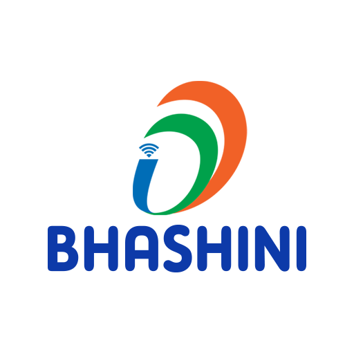

In association with


MTIL (2023)
India has a very high linguistic diversity with over 23 scheduled languages and 19500 dialects. The recent increase in the proliferation of the internet within the country has led to easy accessibility of internet services by people from different regions of the country. However, the consumers of internet services can benefit from the vast information available only when these services are available in their local language. These benefits become even more evident if information in domain-specific areas like governance, health, agriculture, etc., can be translated into local languages. Hence this leads to the requirement for robust machine translation systems which can perform translation from one Indian language to another Indian language.
Indian languages have many linguistic complexities. Though some Indian languages share syntactic similarities, some possess intricate morphological structures. At the same time, some Indian languages are low-resource. Therefore the machine translation models should address these unique challenges in translating between Indian languages.
This track aims to encourage research in machine translation between Indian languages and also focuses on domain-specific translation. Finally, this track seeks to provide an evaluation framework that can evaluate the performance of the models in general translation and domain-specific translation.